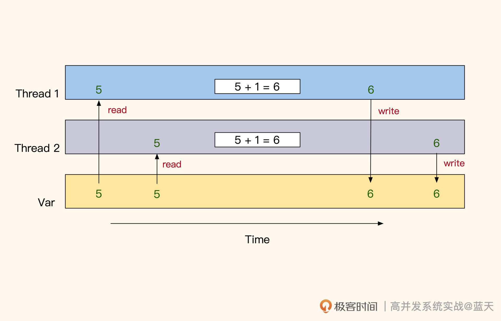
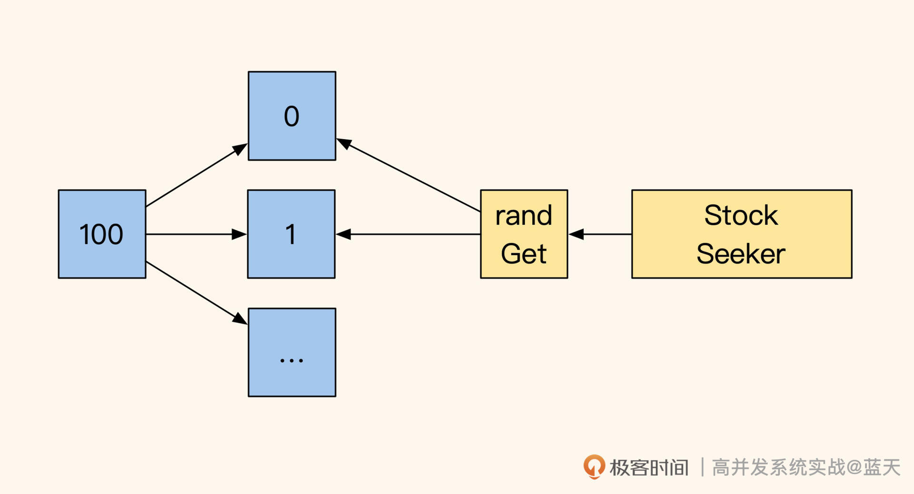
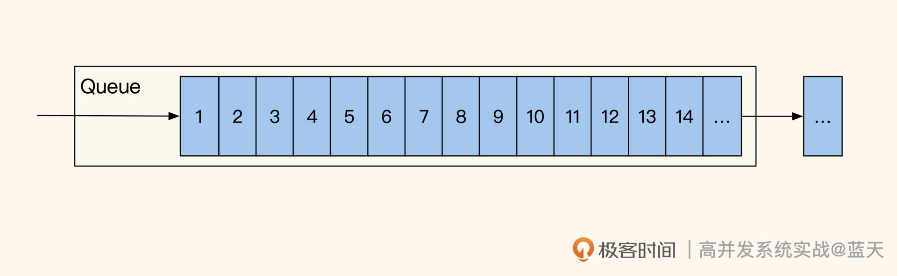
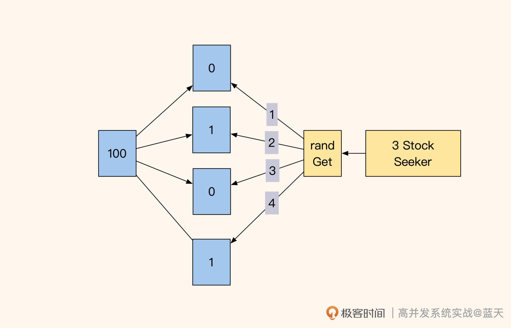
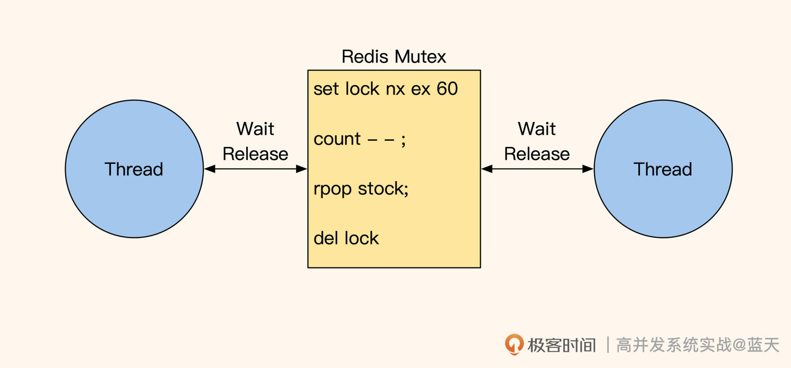
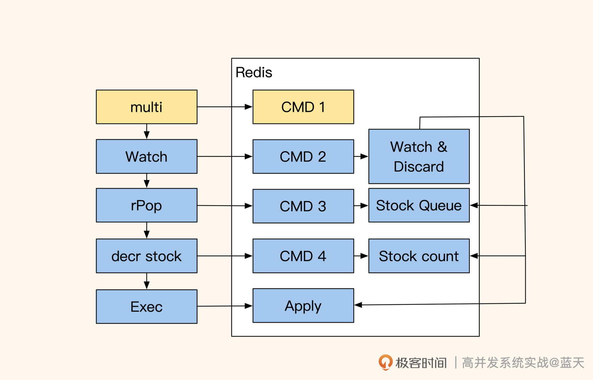
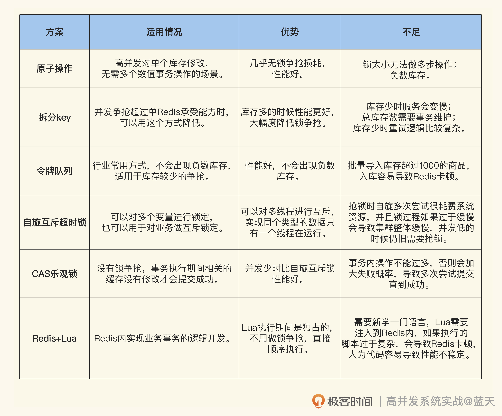

- 00 开篇词 高并发系统，技术实力的试金石.md.html
- 01 结构梳理：大并发下，你的数据库表可能成为性能隐患.md.html
- 02 缓存一致：读多写少时，如何解决数据更新缓存不同步？.md.html
- 03 Token：如何降低用户身份鉴权的流量压力？.md.html
- 04 同城双活：如何实现机房之间的数据同步？.md.html
- 05 共识Raft：如何保证多机房数据的一致性？.md.html
- 06 领域拆分：如何合理地拆分系统？.md.html
- 07 强一致锁：如何解决高并发下的库存争抢问题？.md.html
- 08 系统隔离：如何应对高并发流量冲击？.md.html
- 09 分布式事务：多服务的2PC、TCC都是怎么实现的？.md.html
- 10 稀疏索引：为什么高并发写不推荐关系数据库？.md.html
- 11 链路追踪：如何定制一个分布式链路跟踪系统 ？.md.html
- 12 引擎分片：Elasticsearch如何实现大数据检索？.md.html
- 13 实时统计：链路跟踪实时计算中的实用算法.md.html
- 14 跳数索引：后起新秀ClickHouse.md.html
- 15 实践方案：如何用C++自实现链路跟踪？.md.html
- 16 本地缓存：用本地缓存做服务会遇到哪些坑？.md.html
- 17 业务脚本：为什么说可编程订阅式缓存服务更有用？.md.html
- 18 流量拆分：如何通过架构设计缓解流量压力？.md.html
- 19 流量调度：DNS、全站加速及机房负载均衡.md.html
- 20 数据引擎：统一缓存数据平台.md.html
- 21 业务缓存：元数据服务如何实现？.md.html
- 22 存储成本：如何推算日志中心的实现成本？.md.html
- 23 网关编程：如何通过用户网关和缓存降低研发成本？.md.html
- 24 性能压测：压测不完善，效果减一半.md.html
- 答疑课堂 思考题答案（一）.md.html
- 结束语 为者常成，行者常至.md.html
- 捐赠
07 强一致锁：如何解决高并发下的库存争抢问题？
你好，我是徐长龙。
这节课我会给你详细讲一讲高并发下的库存争抢案例，我相信很多人都看到过相关资料，但是在实践过程中，仍然会碰到具体的实现无法满足需求的情况，比如说有的实现无法秒杀多个库存，有的实现新增库存操作缓慢，有的实现库存耗尽时会变慢等等。
这是因为对于不同的需求，库存争抢的具体实现是不一样的，我们需要详细深挖，理解各个锁的特性和适用场景，才能针对不同的业务需要做出灵活调整。
由于秒杀场景是库存争抢非常经典的一个应用场景，接下来我会结合秒杀需求，带你看看如何实现高并发下的库存争抢，相信在这一过程中你会对锁有更深入的认识。
锁争抢的错误做法
在开始介绍库存争抢的具体方案之前，我们先来了解一个小知识——并发库存锁。还记得在我学计算机的时候，老师曾演示过一段代码：
public class ThreadCounter {
private static int count = 0;
public static void main(String[] args) throws Exception {
Runnable task = new Runnable() {
public void run() {
for (int i = 0; i < 1000; ++i) {
count += 1;
}
}
};
Thread t1 = new Thread(task);
t1.start();
Thread t2 = new Thread(task);
t2.start();
t1.join();
t2.join();
cout << "count = " << count << endl;
}
}
从代码来看，我们运行后结果预期是2000，但是实际运行后并不是。为什么会这样呢？
当多线程并行对同一个公共变量读写时，由于没有互斥，多线程的set会相互覆盖或读取时容易读到其他线程刚写一半的数据，这就导致变量数据被损坏。反过来说，我们要想保证一个变量在多线程并发情况下的准确性，就需要这个变量在修改期间不会被其他线程更改或读取。
对于这个情况，我们一般都会用到锁或原子操作来保护库存变量：
- 如果是简单int类型数据，可以使用原子操作保证数据准确；
- 如果是复杂的数据结构或多步操作，可以加锁来保证数据完整性。
这里我附上关于几种锁的参考资料，如果你感兴趣可以深入了解一下。
考虑到我们之前的习惯会有一定惯性，为了让你更好地理解争抢，这里我再举一个我们常会犯错的例子。因为扣库存的操作需要注意原子性，我们实践的时候常常碰到后面这种方式：
redis> get prod_1475_stock_1
15
redis> set prod_1475_stock_1 14
OK
也就是先将变量从缓存中取出，对其做-1操作，再放回到缓存当中，这是个错误做法。

如上图，原因是多个线程一起读取的时候，多个线程同时读到的是5，set回去时都是6，实际每个线程都拿到了库存，但是库存的实际数值并没有累计改变，这会导致库存超卖。如果你需要用这种方式去做，一般建议加一个自旋互斥锁，互斥其他线程做类似的操作。
不过锁操作是很影响性能的，在讲锁方式之前，我先给你介绍几个相对轻量的方式。
原子操作
在高并发修改的场景下，用互斥锁保证变量不被错误覆盖性能很差。让一万个用户抢锁，排队修改一台服务器的某个进程保存的变量，这是个很糟糕的设计。
因为锁在获取期间需要自旋循环等待，这需要不断地循环尝试多次才能抢到。而且参与争抢的线程越多，这种情况就越糟糕，这期间的通讯过程和循环等待很容易因为资源消耗造成系统不稳定。
对此，我会把库存放在一个独立的且性能很好的内存缓存服务Redis中集中管理，这样可以减少用户争抢库存导致其他服务的抖动，并且拥有更好的响应速度，这也是目前互联网行业保护库存量的普遍做法。
同时，我不建议通过数据库的行锁来保证库存的修改，因为数据库资源很珍贵，使用数据库行锁去管理库存，性能会很差且不稳定。
前面我们提到当有大量用户去并行修改一个变量时，只有用锁才能保证修改的正确性，但锁争抢性能很差，那怎么降低锁的粒度、减少锁的争枪呢？

如上图，其实我们可以将一个热门商品的库存做拆分，放在多个key中去保存，这样可以大幅度减少锁争抢。
举个例子，当前商品库存有100个，我们可以把它放在10个key中用不同的Redis实例保存，每个key里面保存10个商品库存，当用户下单的时候可以随机找一个key进行扣库存操作。如果没库存，就记录好当前key再随机找剩下的9个key，直到成功扣除1个库存。
除了这种方法以外，我个人更推荐的做法是使用Redis的原子操作，因为原子操作的粒度更小，并且是高性能单线程实现，可以做到全局唯一决策。而且很多原子操作的底层实现都是通过硬件实现的，性能很好，比如文稿后面这个例子：
redis> decr prod_1475_stock_1
14
incr、decr这类操作就是原子的，我们可以根据返回值是否大于0来判断是否扣库存成功。但是这里你要注意，如果当前值已经为负数，我们需要考虑一下是否将之前扣除的补偿回来。并且为了减少修改操作，我们可以在扣减之前做一次值检测，整体操作如下：
//读取当前库存，确认是否大于零
//如大于零则继续操作，小于等于拒绝后续
redis> get prod_1475_stock_1
1
//开始扣减库存、如返回值大于或等于0那么代表扣减成功，小于0代表当前已经没有库存
//可以看到返回-2，这可以理解成同时两个线程都在操作扣库存，并且都没拿到库存
redis> decr prod_1475_stock_1
-2
//扣减失败、补偿多扣的库存
//这里返回0是因为同时两个线程都在做补偿，最终恢复0库存
redis> incr prod_1475_stock
0
这看起来是个不错的保护库存量方案，不过它也有缺点，相信你已经猜到了，这个库存的数值准确性取决于我们的业务是否能够返还恢复之前扣除的值。如果在服务运行过程中，“返还”这个操作被打断，人工修复会很难，因为你不知道当前有多少库存还在路上狂奔，只能等活动结束后所有过程都落地，再来看剩余库存量。
而要想完全保证库存不会丢失，我们习惯性通过事务和回滚来保障。但是外置的库存服务Redis不属于数据库的缓存范围，这一切需要通过人工代码去保障，这就要求我们在处理业务的每一处故障时都能处理好库存问题。
所以，很多常见秒杀系统的库存在出现故障时是不返还的，并不是不想返还，而是很多意外场景做不到。
提到锁，也许你会想到使用Setnx指令或数据库CAS的方式实现互斥排他锁，以此来解决库存问题。但是这个锁有自旋阻塞等待，并发高的时候用户服务需要循环多次做尝试才能够获取成功，这样很浪费系统资源，对数据服务压力较大，不推荐这样去做（这里附上锁性能对比参考）。
令牌库存
除了这种用数值记录库存的方式外，还有一种比较科学的方式就是“发令牌”方式，通过这个方式可以避免出现之前因为抢库存而让库存出现负数的情况。

具体是使用Redis中的list保存多张令牌来代表库存，一张令牌就是一个库存，用户抢库存时拿到令牌的用户可以继续支付：
//放入三个库存
redis> lpush prod_1475_stock_queue_1 stock_1
redis> lpush prod_1475_stock_queue_1 stock_2
redis> lpush prod_1475_stock_queue_1 stock_3
//取出一个，超过0.5秒没有返回，那么抢库存失败
redis> brpop prod_1475_stock_queue_1 0.5
在没有库存后，用户只会拿到nil。当然这个实现方式只是解决抢库存失败后不用再补偿库存的问题，在我们对业务代码异常处理不完善时仍会出现丢库存情况。
同时，我们要注意brpop可以从list队列“右侧”中拿出一个令牌，如果不需要阻塞等待的话，使用rpop压测性能会更好一些。
不过，当我们的库存成千上万的时候，可能不太适合使用令牌方式去做，因为我们需要往list中推送1万个令牌才能正常工作来表示库存。如果有10万个库存就需要连续插入10万个字符串到list当中，入库期间会让Redis出现大量卡顿。
到这里，关于库存的设计看起来已经很完美了，不过请你想一想，如果产品侧提出“一个商品可以抢多个库存”这样的要求，也就是一次秒杀多个同种商品（比如一次秒杀两袋大米），我们利用多个锁降低锁争抢的方案还能满足吗？
多库存秒杀
其实这种情况经常出现，这让我们对之前的优化有了更多的想法。对于一次秒杀多个库存，我们的设计需要做一些调整。

之前我们为了减少锁冲突把库存拆成10个key随机获取，我们设想一下，当库存剩余最后几个商品时，极端情况下要想秒杀三件商品（如上图），我们需要尝试所有的库存key，然后在尝试10个key后最终只拿到了两个商品库存，那么这时候我们是拒绝用户下单，还是返还库存呢？
这其实就要看产品的设计了，同时我们也需要加一个检测：如果商品卖完了就不要再尝试拿10个库存key了，毕竟没库存后一次请求刷10次Redis，对Redis的服务压力很大（Redis O(1)指令性能理论可以达到10w OPS，一次请求刷10次，那么理想情况下抢库存接口性能为1W QPS，压测后建议按实测性能70%漏斗式限流）。
这时候你应该发现了，在“一个商品可以抢多个库存”这个场景下，拆分并没有减少锁争抢次数，同时还加大了维护难度。当库存越来越少的时候，抢购越往后性能表现越差，这个设计已经不符合我们设计的初衷（由业务需求造成我们底层设计不合适的情况经常会碰到，这需要我们在设计之初，多挖一挖产品具体的需求）。
那该怎么办呢？我们不妨将10个key合并成1个，改用rpop实现多个库存扣减，但库存不够三个只有两个的情况，仍需要让产品给个建议看看是否继续交易，同时在开始的时候用LLEN（O(1)）指令检查一下我们的List里面是否有足够的库存供我们rpop，以下是这次讨论的最终设计：
//取之前看一眼库存是否空了，空了不继续了(llen O(1))
redis> llen prod_1475_stock_queue
3
//取出库存3个，实际抢到俩
redis> rpop prod_1475_stock_queue 3
"stock_1"
"stock_2"
//产品说数量不够，不允许继续交易，将库存返还
redis> lpush prod_1475_stock_queue stock_1
redis> lpush prod_1475_stock_queue stock_2
通过这个设计，我们已经大大降低了下单系统锁争抢压力。要知道，Redis是一个性能很好的缓存服务，其O(1)类复杂度的指令在使用长链接的情况下多线程压测，5.0 版本的Redis就能够跑到10w OPS，而6.0版本的网络性能会更好。
这种利用Redis原子操作减少锁冲突的方式，对各个语言来说是通用且简单的。不过你要注意，不要把Redis服务和复杂业务逻辑混用，否则会影响我们的库存接口效率。
自旋互斥超时锁
如果我们在库存争抢时需要操作多个决策key才能够完成争抢，那么原子这种方式是不适合的。因为原子操作的粒度过小，无法做到事务性地维持多个数据的ACID。
这种多步操作，适合用自旋互斥锁的方式去实现，但流量大的时候不推荐这个方式，因为它的核心在于如果我们要保证用户的体验，我们需要逻辑代码多次循环抢锁，直到拿到锁为止，如下：
//业务逻辑需要循环抢锁，如循环10次，每次sleep 10ms，10次失败后返回失败给用户
//获取锁后设置超时时间，防止进程崩溃后没有释放锁导致问题
//如果获取锁失败会返回nil
redis> set prod_1475_stock_lock EX 60 NX
OK
//抢锁成功，扣减库存
redis> rpop prod_1475_stock_queue 1
"stock_1"
//扣减数字库存，用于展示
redis> decr prod_1475_stock_1
3
// 释放锁
redis> del prod_1475_stock_lock

这种方式的缺点在于，在抢锁阶段如果排队抢的线程越多，等待时间就越长，并且由于多线程一起循环check的缘故，在高并发期间Redis的压力会非常大，如果有100人下单，那么有100个线程每隔10ms就会check一次，此时Redis的操作次数就是：
\[100线程\\times（1000ms\\div10ms）次 = 10000 ops\]
CAS乐观锁：锁操作后置
除此之外我再推荐一个实现方式：CAS乐观锁。相对于自旋互斥锁来说，它在并发争抢库存线程少的时候效率会更好。通常，我们用锁的实现方式是先抢锁，然后，再对数据进行操作。这个方式需要先抢到锁才能继续，而抢锁是有性能损耗的，即使没有其他线程抢锁，这个消耗仍旧存在。
CAS乐观锁的核心实现为：记录或监控当前库存信息或版本号，对数据进行预操作。

如上图，在操作期间如果发现监控的数值有变化，那么就回滚之前操作；如果期间没有变化，就提交事务的完成操作，操作期间的所有动作都是事务的。
//开启事务
redis> multi
OK
// watch 修改值
// 在exec期间如果出现其他线程修改，那么会自动失败回滚执行discard
redis> watch prod_1475_stock_queue prod_1475_stock_1
//事务内对数据进行操作
redis> rpop prod_1475_stock_queue 1
QUEUED
//操作步骤2
redis> decr prod_1475_stock_1
QUEUED
//执行之前所有操作步骤
//multi 期间 watch有数值有变化则会回滚
redis> exec
3
可以看到，通过这个方式我们可以批量地快速实现库存扣减，并且能大幅减少锁争抢时间。它的好处我们刚才说过，就是争抢线程少时效率特别好，但争抢线程多时会需要大量重试，不过即便如此，CAS乐观锁也会比用自旋锁实现的性能要好。
当采用这个方式的时候，我建议内部的操作步骤尽量少一些。同时要注意，如果Redis是Cluster模式，使用multi时必须在一个slot内才能保证原子性。
Redis Lua方式实现Redis锁
与“事务+乐观锁”类似的实现方式还有一种，就是使用Redis的Lua脚本实现多步骤库存操作。因为Lua脚本内所有操作都是连续的，这个操作不会被其他操作打断，所以不存在锁争抢问题。
而且、可以根据不同的情况对Lua脚本做不同的操作，业务只需要执行指定的Lua脚本传递参数即可实现高性能扣减库存，这样可以大幅度减少业务多次请求等待的RTT。
为了方便演示怎么执行Lua脚本，我使用了PHP实现：
<?php
$script = <<<EOF
// 获取当前库存个数
local stock=tonumber(redis.call('GET',KEYS[1]));
//没找到返回-1
if stock==nil
then
return -1;
end
//找到了扣减库存个数
local result=stock-ARGV[1];
//如扣减后少于指定个数，那么返回0
if result<0
then
return 0;
else
//如果扣减后仍旧大于0，那么将结果放回Redis内，并返回1
redis.call('SET',KEYS[1],result);
return 1;
end
EOF;
$redis = new \Redis();
$redis->connect('127.0.0.1', 6379);
$result = $redis->eval($script, array("prod_stock", 3), 1);
echo $result;
通过这个方式，我们可以远程注入各种连贯带逻辑的操作，并且可以实现一些补库存的操作。
总结
这节课，我们针对库存锁争抢的问题，通过Redis的特性实现了六种方案，不过它们各有优缺点。
- 以上这些方法可以根据业务需要组合使用。
其实，我们用代码去实现锁定扣库存也能够实现库存争抢功能，比如本地CAS乐观锁方式，但是一般来说，我们自行实现的代码会和其他业务逻辑混在一起，会受到多方因素影响，业务代码会逐渐复杂，性能容易失控。而Redis是独立部署的，会比我们的业务代码拥有更好的系统资源去快速解决锁争抢问题。
你可能发现我们这节课讲的方案大多数只有一层“锁”，但很多业务场景实际存在多个锁的情况，并不是我不想介绍，而是十分不推荐，因为多层锁及锁重入等问题引入后会导致我们系统很难维护，一个小粒度的锁能解决我们大部分问题，何乐而不为呢？
思考题
1.请你思考一下，通过原子操作+拆开库存方式实现库存方案时，如何减少库存为0后接口缓慢的问题？
2.我们这节课的内容并不仅仅在讲库存，还包含了大量可实现的锁的使用方式，请你分享一些实践过程中常见但不容易被发现的精妙设计。
欢迎你在评论区与我交流讨论，我们下节课见！
© 2019 - 2023 Liangliang Lee. Powered by gin and hexo-theme-book.